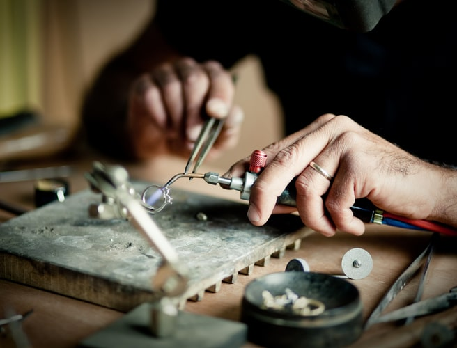

Who we are!

Focusing on Nepalese community in New York, Queens Diamond Jewelry store was opened in 2004. Due to the excellent service and hospitality, Queens Diamond is always ahead in terms of attachment with the local community. Moreover, Queens Diamond love to establish a long-time bond and quality relationship with our customers.
This is a family owned business, owned by Mr. Samir Maharjan (CEO) and his wife Mrs. Surya Maharjan. They have been serving customers start from the time of establishment. Taking more of the owners, they are very humble and renowned persons in Nepal and Jackson Heights, New York.
As the time passed, Queens diamond grew to become a larger company having stores at multiple locations. In USA, there are stores at three different locations: New York, Maryland and California and in Nepal, Queens Diamond have stores at two different locations in Kathmandu. In Overall, Queens Diamond has a team of 145 individuals, 120 residing in Nepal and 25 in US.
From the perspective of jewelry, Queens Diamond is well known for customized jewelry which includes both ethnic as well as modern jewelry. Orders are received for jewelries with and without stones. Queens Diamond provide 100% credit back on exchange of jewelries except for gold. For gold, Queens Diamond provides 100% buy back guarantee. To check our exchange policy page by clicking here.
If you are fashion show fan, you may have known Queens Diamond through our National and International fashion shows such as: TPJFS, Face of Classic Diamonds etc. These are the events where we lunch and promote our new products every year. If you want to watch our fashion show event, click here.
After the struggle for all these years, Queens Diamond is now focusing on the customers who are not near to their store. Queens Diamond wants to serve the customer beyond the limit of geographical location. That is why we are here to serve you through our website. We are trying our best to provide the same quality of service that you get in our physical location.
Dowload App for Android and IOS mobile phone.
Our purpose is to sustainably satisfy our customer.
Copyright 2022- Subi Shops